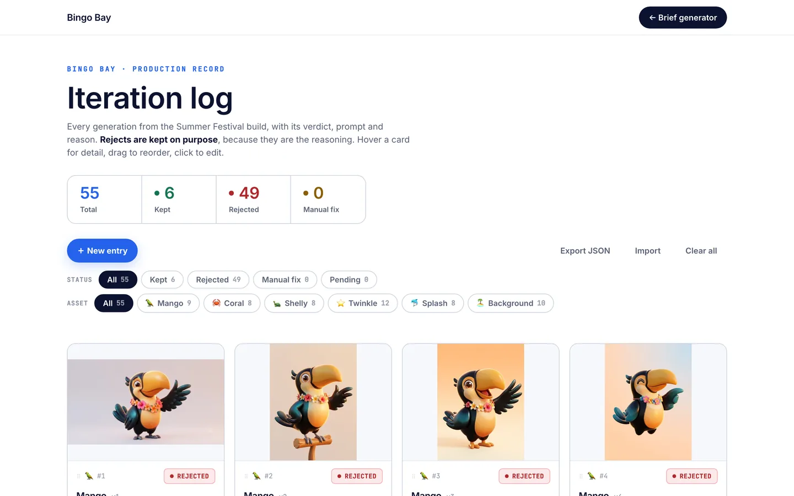

Brief generator
Part of the Bingo Bay take-home · 2026
Every asset request turns into a brief, and a creative lead writes each one from scratch. This turns a two-minute intake into a finished brief that already carries the locked art direction, the prompt, the QA list and the file naming. The lead approves it instead of writing it.
It runs right here. Change anything and the brief rewrites itself.
What annoyed me
A brief eats 45 to 60 minutes of a lead’s day and still arrives half complete. The art direction gets retyped from memory, and the prompt drifts a little every time it does.
What I decided
A brief is a function of the request and the locked art direction. If it can be computed, no lead should be writing one. They should be approving one.
What I built
The assembly step as a working prototype in the page, and the production flow around it: Slack intake, context pulled from the brief library, Claude assembling, the lead approving, Jira and Drive delivering.
Scope
5 asset typesKey art, characters, UI plates, music and copy
The locks are read-onlyOnly the art director can change a token the brief cites
Two human gatesThe lead approves the brief, the art director owns the locks
Around 7 to 9 hours a weekAn estimate: 10 briefs at 45 to 60 minutes, against 5 minutes of intake and review
How it runs
Nothing runs on a schedule. A request starts it.
A new intake, or a Jira ticket labelled needs-brief, sets it off. n8n is the spine. The prototype above is the middle of it: the same template, the same locks, with Slack in front and the approval gate behind.
- TriggerIntakeA Slack form or a Jira ticket: asset type, event, deadline, notes. Two minutes.
- AI stepContext pullFetches the event’s art direction, palette tokens and voice guide from the brief library.
- AI stepAssemblyClaude writes the objective, spec, prompt, QA list and naming.
- Human gateLead approvalApprove, edit, or reject with a reason that gets logged.
- OutputDeliveredThe brief lands in Jira and Drive, the assignee is told, and a log row is waiting.
In
- Asset type and event
- Deadline and requester
- A free-text line of intent
- The brief library: locks, voice guide, past briefs
Out
- A structured brief: objective, spec, references
- Prompts ready to paste
- A QA checklist and file naming
- An iteration log entry, already created
On
- n8n, self-hosted, as the spine
- The Claude API for assembly
- Slack for intake and approval buttons
- Jira and Google Drive for delivery
The other half
The brief says what to make. The log says what happened.
Every generation gets a verdict (kept, rejected, needs a fix), its prompt and its reason. Most creatives lose exactly that history, and it is the part that sharpens the next prompt and onboards the next hire. The differences between the two feed the next version of the locks.
55 entries from the Bingo Bay build. Filter, reorder, edit, export. It runs in the browser and saves nothing to a server.
